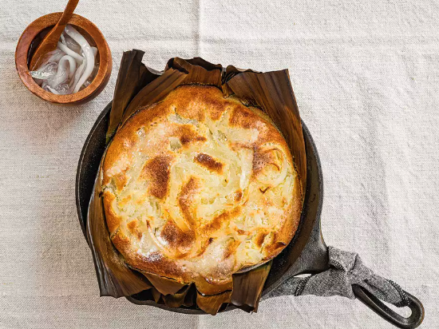

Bibingka
Home

A coconut-flavored, banana-leaf scented rice cake topped with caramelized
coconut strips.
Eating bibingka, a fluffy, lightly sweetened rice cake, is closely
associated with Christmas time in the Philippines.
Bibingka is best enjoyed warm with a mug of steaming hot coffee or tea,
and even though it's associated with Christmas, it’s delicious at any time
of the year.
Ingredients
-
1 banana leaf, cut into two 8-inch-wide by 10-inch-long pieces
(optional, see note)
- 2 ounces unsalted butter (4 tablespoons; 55g), melted, divided
- 3 ounces white rice flour (1/2 cup; 85g)
- 1 1/4 ounces sweet rice flour (1/4 cup; 40g), preferably mochiko
- 1 1/2 teaspoons (7g) baking powder
-
1/8 teaspoon Diamond Crystal kosher salt; for table salt, use half as
much by volume
-
2 3/4 ounces sugar (1/4 cup plus 2 tablespoons; 80g), plus extra for
sprinkling
- 3/4 cup (175ml) full-fat coconut milk
- 1 large egg (1 3/4 ounces; 50g)
- 3 ounces (85g) macapuno, drained
Steps
-
Adjust oven rack to middle position and preheat to 375°F (190°C). If
using banana leaf, rinse banana leaf pieces under cold running water and
pat dry with paper towels. Working with one piece of banana leaf at a
time, hold banana leaf with tongs about 2 inches above medium-high flame
of a gas burner, turning every 3 to 5 seconds, until soft and pliable,
about 15 seconds. Transfer to a plate and repeat with remaining piece of
banana leaf. Place banana leaf pieces in an 8-inch anodized aluminum
cake pan or cast iron skillet, arranging them in an overlapping
configuration to completely cover the bottom and sides of the pan,
pressing down on them with your hands to ensure they are flush with the
pan. Brush evenly with 1/2 ounce (1 tablespoon; 15g) melted butter and
set aside. Alternatively, if not using banana leaf, grease an 8-inch
anodized aluminum cake pan or cast iron skillet with melted butter or
pan spray and line with parchment; set aside.
-
In a medium bowl, whisk together white rice flour, sweet rice flour,
baking powder, and salt until well combined, about 1 minute. This dry
mixture will look homogeneous well before it truly is, so use patience
at this stage, and whisk longer than may seem necessary.
-
In a large bowl, whisk together 1 ounce (2 tablespoons; 30g) melted
butter, sugar, coconut milk, and egg, until sugar is dissolved and
mixture is thoroughly combined. Add flour mixture to coconut milk
mixture and whisk together until completely smooth and no dry flour
remains, about 1 minute. Using a flexible spatula, fold batter once or
twice from the bottom up, then scrape into prepared pan.
-
Bake until batter is beginning to set at the edges, about 10 minutes.
Remove from oven and evenly distribute macapuno in a single layer over
top. Return pan to oven and continue to bake until cake is puffed, edges
are lightly browned, and a toothpick inserted in the center comes out
with few moist crumbs attached, or to an internal temperature of around
200°F (93°C), about 12 minutes.
-
Remove from oven and preheat broiler. Brush top of cake with remaining
melted butter and lightly sprinkle sugar evenly over top. Broil until
cake is golden brown and macapuno is slightly caramelized, about 2
minutes.
-
Transfer pan to a wire rack and cool for 10 minutes. Run a butter knife
along edges to loosen, then invert onto a wire rack, remove banana
leaves or parchment, and place cake right side up on serving platter.
Serve warm.